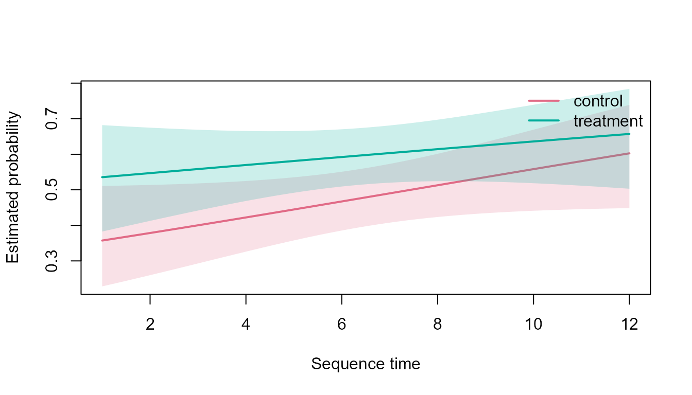

Time-Varying Condition Comparisons
Source:vignettes/time-varying-condition-models.Rmd
time-varying-condition-models.RmdModel target
fit_time_varying_sequence_model() estimates the
probability of a declared state or transition over aligned sequence
time. It uses group-specific smooths and can include a participant
random-effect smooth. The model concerns a predeclared structural
outcome, not an unobserved psychological state.
Synthetic repeated sequences
set.seed(1)
participants <- paste0("p", 1:24)
x <- do.call(
rbind,
lapply(seq_along(participants), function(i) {
time <- 1:12
group <- if (i <= 12L) "control" else "treatment"
linear <-
-0.4 +
0.06 * time +
0.35 * (group == "treatment") * sin(time / 3)
data.frame(
participant_id = participants[i],
sequence_id = participants[i],
sequence_order = time,
group = group,
state = ifelse(
stats::runif(length(time)) < stats::plogis(linear),
"A",
"B"
),
stringsAsFactors = FALSE
)
})
)Fit and inspect
if (requireNamespace("mgcv", quietly = TRUE)) {
model <- fit_time_varying_sequence_model(
x,
group_col = "group",
participant_id_col = "participant_id",
target_state = "A",
k = 5L
)
model_summary <- summarise_time_varying_sequence_model(model)
model_summary$metadata
model_summary$parametric_terms
model_summary$smooth_terms
}
#> edf Ref.df Chi.sq p-value
#> s(.time):.groupcontrol 1.0000070152 1.000014 3.4110320487 0.06476524
#> s(.time):.grouptreatment 1.0000046648 1.000009 0.8712217158 0.35062143
#> s(.participant) 0.0007846011 22.000000 0.0006886217 0.62618174Predictions
if (requireNamespace("mgcv", quietly = TRUE)) {
predictions <- predict_time_varying_sequence_model(
model,
time = seq(1, 12, length.out = 60L),
level = 0.95
)
head(predictions)
}
#> time group estimate lower upper outcome
#> 1 1.000000 control 0.3572934 0.2283391 0.5108610 state
#> 2 1.186441 control 0.3612081 0.2340796 0.5112900 state
#> 3 1.372881 control 0.3651413 0.2398916 0.5117573 state
#> 4 1.559322 control 0.3690926 0.2457709 0.5122658 state
#> 5 1.745763 control 0.3730615 0.2517130 0.5128189 state
#> 6 1.932203 control 0.3770476 0.2577129 0.5134199 state
if (requireNamespace("mgcv", quietly = TRUE)) {
plot_time_varying_sequence_model(model)
}